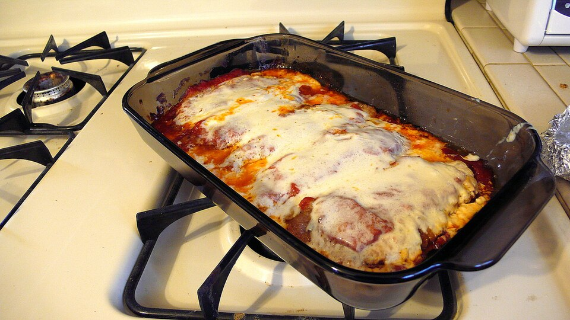

Carnes · Bovinos
Bifes à Parmiggiana

Ingredientes
- 2 colheres (sopa) de azeite
- 1 cebola picada
- 1 dente de alho
- 2 latas de purê de tomate
- 1 colher (sopa) de orégano
- 2 colheres (chá) de sal
- 1 colher (chá) de açúcar
- 6 bifes de vitela
- sal e pimenta-do-reino a gosto
- 2 ovos
- 1/2 xícara de farinha de trigo
- 1 1/2 xícara de farinha de rosca
- 1 xícara de óleo
- 6 fatias de presunto
- 6 fatias de mussarela
- 2 colheres (sopa) de queijo parmesão
Modo de preparo
- Refogue a cebola e o alho no azeite até dourar.
- Junte o purê de tomate, orégano, sal e açúcar; cozinhe cerca de 15 minutos, mexendo de vez em quando. Reserve.
- Bata os bifes levemente e tempere com sal e pimenta.
- Prepare três recipientes: ovos batidos com um pouco de água, farinha de trigo e farinha de rosca.
- Passe os bifes na farinha, nos ovos e na farinha de rosca.
- Frite no óleo quente, dois a dois, virando uma vez. Escorra em papel-toalha. (Faça riscos leves com o dorso da faca na superfície antes de fritar para a empanada não rachar.)
- Em embalagem de alumínio, coloque 1/3 do molho, os bifes, cada um com presunto e mussarela; cubra com o restante do molho e polvilhe parmesão. Deixe esfriar e congele.
Observação
Congelamento: cubra, vede, etiquete e congele. Descongelamento: na geladeira de um dia para o outro; asse a 180°C sem tampa para gratinar.